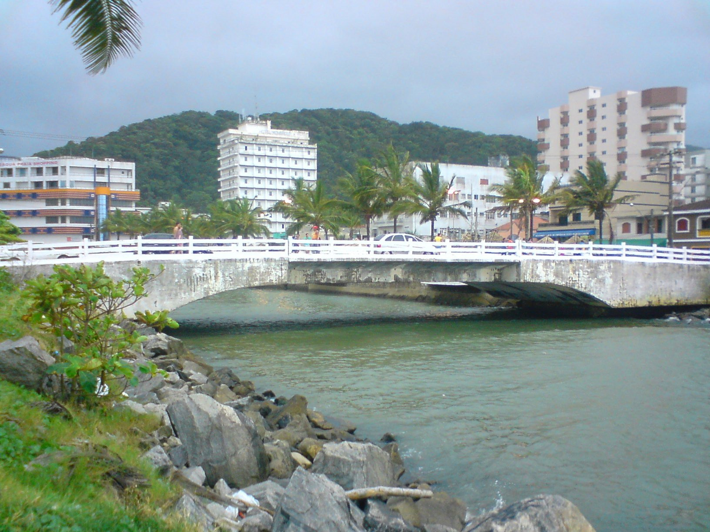
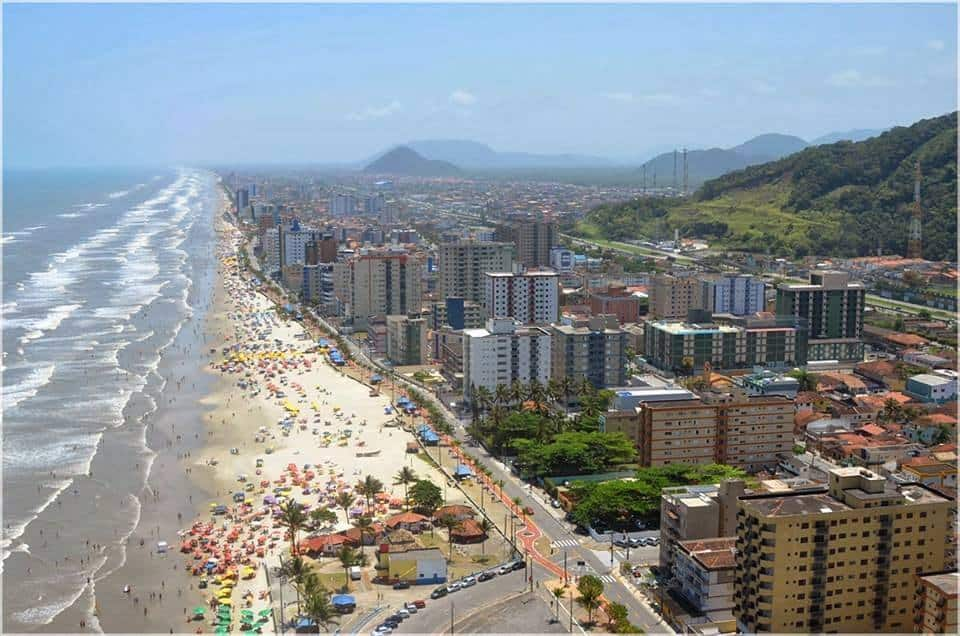

Mongaguá é uma cidade que reúne praias, natureza e cultura no litoral paulista. Conhecida por sua tradicional Plataforma de Pesca e por suas áreas ecológicas, a cidade oferece diversas opções de lazer, turismo e contato com a natureza, preservando características que fazem parte da identidade da Baixada Santista.
Conheça a história, a importância e as riquezas naturais e culturais que fazem Mongaguá única.
Mongaguá possui importância turística e ambiental para a Baixada Santista. Suas praias, parques ecológicos e áreas de Mata Atlântica atraem visitantes durante todo o ano. Além disso, o turismo e o comércio movimentam a economia e contribuem para o desenvolvimento da região.
Mongaguá está localizada no litoral do estado de São Paulo, na região da Baixada Santista, a aproximadamente 95 km da capital paulista. O município possui cerca de 13 km de praias e está situado entre o Oceano Atlântico e áreas de Mata Atlântica.
Mongaguá possui uma das maiores plataformas de pesca marítima em concreto armado da América Latina; A cidade abriga aldeias indígenas guarani; Seu nome tem origem indígena e é associado à expressão "água pegajosa".
A economia de Mongaguá é baseada principalmente no turismo, no comércio, nos serviços e na pesca. Durante a temporada de verão, o movimento de visitantes aumenta, impulsionando hotéis, restaurantes, quiosques e estabelecimentos comerciais da cidade.
Mongaguá atrai visitantes com suas praias, a Plataforma de Pesca, o Poço das Antas e o Parque Ecológico A Tribuna. A cidade também oferece feiras de artesanato, praças, mirantes e espaços culturais, proporcionando opções de lazer para moradores e turistas.
Mongaguá possui áreas de Mata Atlântica, rios, cachoeiras, praias e manguezais. Esses ambientes abrigam diferentes espécies de animais e plantas, além de contribuírem para a preservação ambiental e a biodiversidade da Baixada Santista.
Descubra alguns dos destinos que valem a visita em Mongaguá.
| Localização | Atração | Indicação | Nota dos visitantes |
|---|---|---|---|
| Centro | Feira de Artesanato do Centro | Compras e cultura | 9,0/10 |
| Agenor de Campos | Plataforma de Pesca | Pesca e paisagens | 9,0/10 |
| Centro | Praia Shopping Mongaguá | Compras e entretenimento | 7,6/10 |
| Centro | Praia do Centro | Praia e lazer | 9,0/10 |
| Agenor de Campos | Parque Ecológico A Tribuna | Natureza e educação ambiental | 9,0/10 |
| Agenor de Campos | Praia de Agenor de Campos | Praia e esportes | 8,8/10 |
| Centro | Praça Dudu Samba | Lazer e eventos | 8,8/10 |
| Agenor de Campos | Estátua de Iemanjá | Cultura e tradição | 8,6/10 |
| Centro | Morro da Padroeira | Religião e paisagens | 9,2/10 |